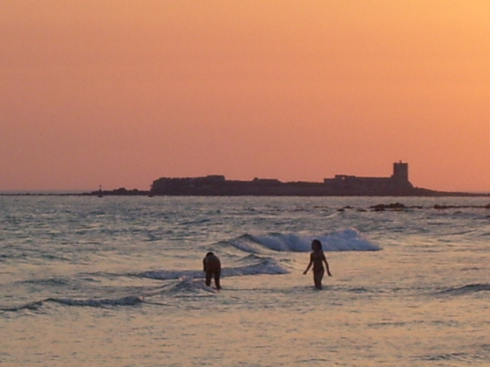

España, también denominado Reino de España,nota 1 es un país transcontinental, miembro de la Unión Europea, constituido en Estado social y democrático de derecho y cuya forma de gobierno es la monarquía parlamentaria. Su territorio, con capital en Madrid,29 está organizado en diecisiete comunidades autónomas, formadas a su vez por cincuenta provincias, y dos ciudades autónomas. España se sitúa tanto al sur de Europa Occidental como en el norte de África. En Europa, ocupa la mayor parte de la península ibérica, conocida como España peninsular, y las islas Baleares (en el mar Mediterráneo occidental); en África se hallan las ciudades de Ceuta (en la península Tingitana) y Melilla (en el cabo de Tres Forcas), las islas Canarias (en el océano Atlántico nororiental), las islas Chafarinas (mar Mediterráneo), el peñón de Vélez de la Gomera (mar Mediterráneo), las islas Alhucemas (golfo de las islas Alhucemas) y la isla de Alborán (mar de Alborán). El municipio de Llivia, en los Pirineos, constituye un enclave rodeado totalmente por territorio francés. Completa el conjunto de territorios una serie de islas e islotes frente a las propias costas peninsulares.

Tiene una extensión de 505 370 km²,10 siendo el cuarto país más extenso del continente, tras Rusia, Ucrania y Francia.Con una altitud media de 650 metros sobre el nivel del mar es uno de los países más montañosos de Europa. Su población es de 47 007 367 habitantes (2019). El territorio peninsular comparte fronteras terrestres con Francia y con Andorra al norte, con Portugal al oeste y con el territorio británico de Gibraltar al sur. En sus territorios africanos, comparte fronteras terrestres y marítimas con Marruecos. Comparte con Francia la soberanía sobre la isla de los Faisanes en la desembocadura del río Bidasoa y cinco facerías pirenaicas.
De acuerdo con la Constitución, y según su artículo 3.1, «el castellano es la lengua española oficial del Estado. Todos los españoles tienen el deber de conocerla y el derecho a usarla». En 2012, era la lengua materna del 82 % de los españoles.31 Según el artículo 3.2, «las demás lenguas españolas serán también oficiales en las respectivas Comunidades Autónomas de acuerdo con sus Estatutos».
